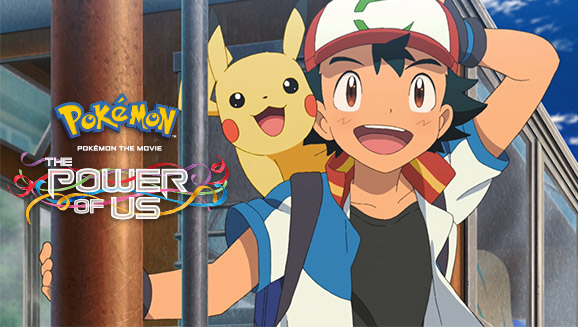

You became a Pokémon, explored exciting dungeons with a trusty Pokémon partner by your side, and so much more! Which Pokémon did you adventure as, Trainers?
The Pokémon Company International (TPCi), a subsidiary of The Pokémon Company in Japan, manages the property outside of Asia and is responsible for brand management, licensing, marketing, the Pokémon Trading Card Game, the animated TV series, home entertainment, and the official Pokémon website. Pokémon was launched in Japan in 1996 and today is one of the most popular children’s entertainment properties in the world.
게임 포켓몬스터의 세계관을 바탕으로 한 아나쿠보 코사쿠의 만화. 최초의 포켓몬 만화이다. 쇼가쿠칸의 만화잡지 별책 코로코로 코믹 1996년 4월호에 '이상한 포켓몬 삐삐'라는 이름으로 처음 연재되었고, 월간 코로코로 코믹 1996년 9월호부터 제목을 '포켓몬스터'로 바꿔서 2019년 11월호까지 연재했다.
게임 포켓몬스터를 기반으로 한 TV 애니메이션 시리즈와 그 파생작들. 1997년에 처음 방영이 시작되어 계속 이어져오고 있는 인기 시리즈이다.
몬스터볼(Poké Ball)이라는 가상의 휴대용 캡슐로 몬스터를 포획한 다음에 간편하게 데리고 다니며 키우는 게임의 내용을 표현한 제목이다.
탄생 과정
포켓몬스터는 개발사인 게임 프리크의 사장인 타지리 사토시가 6년간의 고생 끝에 낳은 결실인데, 게임 출시에 6년이라는 오랜 세월이 걸린 데에는 비하인드 스토리가 있다.
포켓몬스터는 원래 닌텐도 산하의 APE[15]에서 개발금을 투자받아 1991년에 완성하여 납품하기로 약속하였는데, 타지리 사토시의 개발 욕심에 의하여 당초 기획보다 더 많은 아이디어를 계속 추가하면서 개발 기간이 길어졌고, 개발자들 간의 트러블에 의하여 몇몇 개발자는 퇴사까지 했으며 거기에 더해 벤처기업이다보니 게임 개발 경험도 다들 없는데다 재정적으로도 어려움을 겪으며 개발지옥에 빠진 상태였다.
그래서 APE 소속 프로듀서인 이시하라 츠네카즈는 개발이 시작된지 반년만에 포켓몬스터 개발을 잠시 중단한 후 그동안 하청을 받아가면서 개발비를 벌고 스태프들도 게임 제작 경험을 쌓은 뒤 포켓몬스터를 다시 개발하자고 제안을 하게 된다. 그래서 닌텐도에게 게임을 하청받아 제작하게 되는데, 당시 하청을 맡아 제작한 게임은 요시의 알(GB)과 마리오와 와리오(SFC)다.
이후 마리오와 와리오 발매 이후 포켓몬스터의 개발이 3년 동안 재개되었다. 이 때도 상당히 어려움을 겪었다고 하는데, 특히 개발 막바지인 1995년에는 마지막까지 개발에 참여한 인원은 단 9명 밖에 되지 않았다고 하며[16], 타지리 사토시는 회사 경영에도 신경쓰고 포켓몬스터 개발에도 신경쓰느라 너무 힘들어서 이시하라가 창립할 예정인 크리쳐즈와 병합까지 생각했다고 한다. 하지만 타지리 사토시가 본인의 정체성과도 같은 게임 프리크를 쉽게 포기할 수 없었기에, 결국 어려움을 견뎌내고 게임 프리크 단독으로 게임을 개발해내기에 이른다.
타지리 사토시는 당시 게임 업계가 고성능, 뛰어난 3D 그래픽에 집중하던 것과는 다른 방향으로 구상을 전개해 나갔다. 그의 목표는 혼자서 몰두하는 게임이 아닌, 사람들과의 커뮤니케이션을 기본 바탕으로 하는 육성게임을 만드는 것이었다. 2010년대 이후 인터넷의 발전으로 게임계의 헤게모니 자체가 완전히 온라인으로 넘어오고, 스마트폰의 확산으로 인해 SNS 기반의 게임들이 대세로 자리잡은 것을 보면 이 전략이 얼마나 대단한 선견지명이었는지를 알 수 있다.
그러기 위해서는 간편하게 휴대할 수 있는 소형 게임기가 적격이었는데, 마침 게임보이에는 대전용 통신 케이블 기능이 탑재되어 있었다. 하지만 아주 중대한 문제가 남아있었는데, 그것은 캐릭터가 서로 교환하고 싶을 정도로 "다양"하고 "귀여워야" 한다는 점이었다.
지금의 포켓몬스터의 디자인이 나오기까지 디자인을 담당하는 스기모리 켄이 약 300여가지의 스케치를 그렸다. 그 후 사내 인기투표까지 하면서 다시 그려낸 150여마리의 포켓몬을 엄선하게 되었다.포켓몬의 수는 시리즈가 나올 때마다 100마리, 135마리, 107마리, 156마리, 72마리, 86마리, 2마리, 82마리, 7마리가 추가되어 8세대까지 총 898마리가 되었다